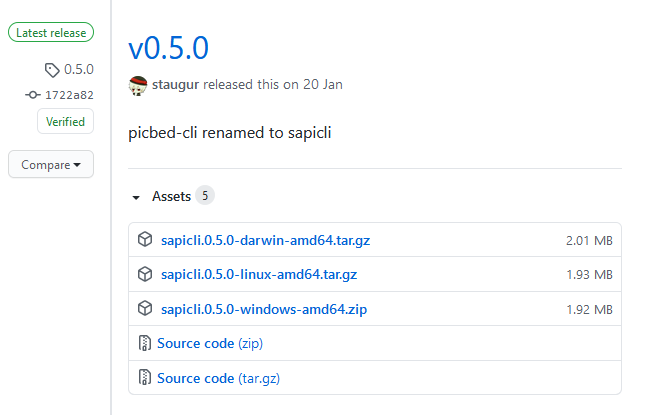

使用说明 - sapicli¶
变更说明¶
sapic图床客户端上传工具cli.py，之前集成在 picbed源仓库 中，使用 python编写，其跨平台需要Python环境支持，相对麻烦。
不过2020-11-26开始（或者说自v1.11.0开始），sapic源仓库移除cli.py，且使用golang编写的 picbed-cli 发布初始版本，凭借golang的 特性，打包后的命令天然具有跨平台能力，且已打包win、mac、linux三端压缩包，可在release中 直接下载，实现了cli.py所有功能！
cli.py的使用说明仍然可以 在这里 找到。
在 0.5.0 版本发生变更: 为适应 v1.12.0 正式名称 sapic ，此 picbed-cli 命令行客户端程序自 v0.5 同步改名 为 sapicli ，源码仓库是： https://github.com/sapicd/cli
在 0.5.2 版本发生变更: 发版时tag增加 v 前缀，以便 go module 使用。
不同点¶
sapicli（golang）比之cli.py的细节差异
新选项 -i/–info 会输出编译时Go版本及你的操作系统类型、架构
url会自动补齐http协议
允许空token，即匿名上传
上传的文件必须放到所有选项后面，不然其他选项无法正常识别
输出风格 -s/–style 选项定制功能的更改
虽然都是使用Python模块，但cli.py要求格式为 mod.func ，而 sapicli 要求格式为 mod 。
cli.py由python编写，可以直接导入你的mod模块，执行func函数，直接传递list数据。
sapicli 由golang编写，通用外部命令调用方式执行你的mod模块，方法是： python -m mod ，通过位置参数传参，数据格式是json，需要使用 json.loads 方法 反序列化为list再处理，示例：
from sys import argv from json import loads if __name__ == "__main__": result = argv[1] try: result = loads(result) except (ValueError, TypeError): pass else: print(result) # format: [{}, {}, ...]
功能¶
[匿名]上传[临时]任意数量图片
设置上传属性，如相册、描述
多种上传结果输出风格，default、typora、empty、line及定制输出
上传结果跨平台复制，支持url、markdown、rST格式，macOS、Win10复制成功消息通知
下载安装¶
请转至 cli release 发行版下载页根据你的操作系统选择压缩包下载到本地，比如windows 10、windows 7用户请下载 xxx-windows-amd64.zip ，macOS用户请下载 xxx-darwin-amd64.tar.gz

压缩内只有一个可执行文件，可以使用绝对路径访问，或者复制/移动到 PATH 环境变量指定目录中 即可。
小技巧
如果您的操作系统支持homebrew（比如macOS），可以使用如下方式快速安装：
brew tap staugur/tap
brew install sapicli
命令选项¶
$ sapicli -h
usage: sapicli [-h] [-v] [-i] [-u PICBED_URL] [-t PICBED_TOKEN] [-a ALBUM]
[-d DESC] [-e EXPIRE] [-s STYLE] [-c {url,md,rst}]
file [file ...]
Doc to https://sapic.rtfd.vip/zh-cn/latest/cli.html
Git to https://github.com/sapicd/cli
positional arguments:
file local image file
optional arguments:
-h, --help show this help message and exit
-v, --version show cli version and exit
-i, --info show full info and exit
-u, --sapic-url SAPIC_URL
The sapic upload api url.
Or use environment variable: sapicli_apiurl
-t, --sapic-token SAPIC_TOKEN
The sapic LinkToken.
Or use environment variable: sapicli_apitoken
-a, --album ALBUM Set image album
-d, --desc DESC Set image title(description)
-e, --expire EXPIRE Set image expire(seconds)
-s, --style STYLE The upload output style: { default, typora, line, empty, <MOD> }.
<MOD> allows to pass in a python module name, and use
"python -m py-mod-name" to customize the output style.
-c, --copy {url,md,rst}
Copy the uploaded image url type to the clipboard
for win/mac/linux.
By the way, md=markdown, rst=reStructuredText
- -u: 指定图床的服务地址，http[s]://你的sapic域名[/api/upload]
可以通过环境变量 sapicli_apiurl 设定
可以省略http，可以省略末尾/api/upload
- -t: 设置LinkToken用以认证、授权，要求拥有
api.upload的post权限 可以通过环境变量 sapicli_apitoken 设定
-a: 设置相册名（可以覆盖LinkToken设置的默认相册）
-d: 设置图片描述
-e: 指定过期时间（秒），作为临时图片上传
-s: 指定输出风格，支持default（默认值）、typora、line、{DIY}
default: 默认值，打印JSON格式的整体上传结果（包括失败）
typora: 专为Typora编辑器上传图片准备的格式，仅输出上传成功的
line: 跟typeora类似，只不过没有先打印upload success，仅输出每个图片url
empty: v0.4.1新增，不输出内容
- {DIY}: 编写Python实现自定义输出，其格式是: module ，即模块名
sapicli会使用 python -m module 尝试直接执行module模块，通过位置参数 传参是result（json格式，列表/数组格式，每个元素都是Hash字典，是图片上传的响应结果）
示例：
$ cat output.py from sys import argv from json import loads result = loads(argv[1]) for i in result: print("py mod diy:", i["src"]) $ sapicli -u xxx -s output upload_file...
-c: 即开启复制，程序会自动识别操作系统，复制上传后的图片url到系统剪贴板
Windows下使用DOS命令clip，执行成功，有消息通知（仅win10）
MacOS下使用pbcopy命令，执行成功，有消息通知
Linux下使用xclip，需要先安装xclip软件，仅用于桌面模式， 测试通过的系统：Deepin Fedora Manjaro Ubuntu CentOS
部分情况会复制失败，比如没有上传成功的图片、上传前就出错了等。
copy允许设定复制图片上传地址的格式，支持url、md、rst格式，其他格式会报错并退出
比如上传1.png，上传后返回url是http://cdn.com/1.png，那么 -c url 会直接复制这个 url， -c md 复制的是：
可以上传多个文件，复制的结果会用 \n 连接。
注意事项¶
上传文件名以中文、非英文数字、特殊符号等开头应该会上传失败，不过出现在非开头位置是可以的（会被过滤）
如果是windows系统开启 -c 选项要求上传后复制，非win10用户是没有提示的，此时如果是控制台 调用，会出现exit status提示
应用示例¶
作为自定义命令在使用Typora时上传图片到图床¶
Typora 是一款跨平台的Markdown编辑器， 在编写内容时可以对图片进行特殊处理，比如上传图片。
打开Typora，定位到偏好设置-图像，选择插入图片时-上传图片，上传服务设定：
上传服务：Custom Command
自定义命令：sapicli -u {sapic-url} -t {LinkToken} -s typora
测试：点击『验证图片上传选项』按钮，验证是否成功。
Windows系统的图片文件添加右键菜单：upload to sapic¶
如果你想在Windows资源管理器中，任意图片右键就能上传到 sapic 的话，OpenWithPlusPlus是个 不错的程序。
github: stax76/OpenWithPlusPlus
打开上述github地址，在release版本页面下载打包的zip压缩包解压，打开程序， 先install（之后你需要重启下资源管理器或电脑），之后添加add新增右键菜单，部分参数解释如下：
Name: 右键菜单名称，随便写，比如 upload to sapic
File Type: 设置为 %image% ，预设的变量
Path：浏览选择 sapicli 程序路径
Arguments: 设置 sapicli 命令行选项参数，如 -u https://Your-Sapic-URL -t xxx -c md “$@”
其他选项自定义，建议底部勾选上 Run hidden
参考示例（图示为老版本）：

macOS系统的图片文件添加右键菜单：upload to sapic¶
环境：macOS Cataline 10.15
打开启动台-自动操作，新建文稿，类型是快速操作，选取确定后，参照以下解释填写：
工作流程收到当前：图像文件
位于：访达
图像/颜色：随便
下面的工作流程，拖拽资源库-实用工具-运行shell脚本， shell选择 /bin/bash ，传递输入选择 作为自变量 ，脚本内容：
sapicli -u https://Your-Sapic-URL -t xxx -c md "$@"
ps: sapicli 需要下载到本地（brew或git），使用绝对路径或放入PATH环境变量
填写完成后，保存，保存的文件名随便，比如 upload to sapic
参考示例（图示为老版本）：